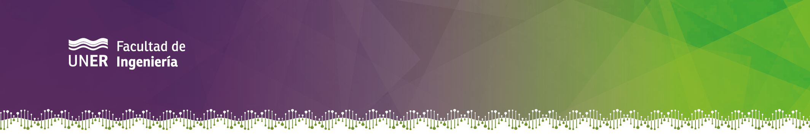

<ion-header [translucent]="true">
  <ion-toolbar>
    <ion-title>
      Stimulator configurator
    </ion-title>
    <ion-buttons slot="start">
      <ion-menu-button menu="main-menu"></ion-menu-button>
    </ion-buttons>
  </ion-toolbar>
</ion-header>

<ion-content>
  
  <h1> System for configuring a FES stimulator.</h1>

  <h2>First, stimulation page. Then, configure each channel. Finally, upload the configuration to the stimulator back again in the connection page. </h2>
</ion-content>
